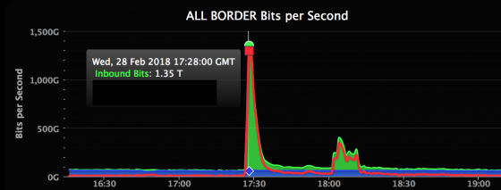
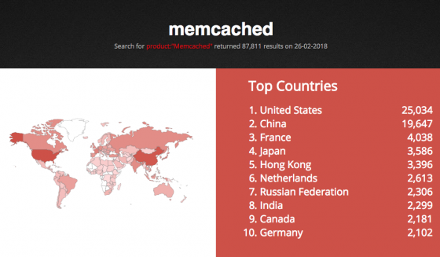
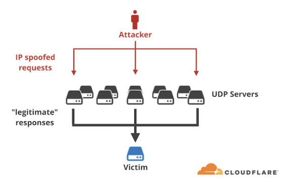

DDOS de 1.35 Tbps
Um ataque DDOS (negação de serviço) é a maneira mais simples e mais grosseira de tirar do ar um servidor e todos os serviços que ele oferece, como um site por exemplo. Consiste em "afogar" o sistema, fazendo uma quantidade absurda de pedidos para o servidor, de forma que não seja capaz de responder aos pedidos legítimos.{kind=link}
DDOS de 1.35 Tbps
Se você não tem proteção adequada, um ataque DDOS geralmente termina com o servidor caindo; para o usuário, isso resulta em páginas fora do ar ou serviços inacessíveis. Por outro lado, se você é o Github, você aparentemente é capaz de suportar tudo o que vier quase sem se abalar.
O maior ataque DDOS registrado ocorreu sem afetar os usuários
Aconteceu na última quarta-feira, 28 de fevereiro, às 1h15m no horário de Brasília; Naquele momento, alguns usuários começaram a notar que o Github estava ficando um pouco lento. Às vezes, era inacessível, pouco a pouco a situação melhorava e em poucos minutos a rede voltou ao normal.Parecia um problema temporário do servidor, e a maioria não deu importância, pois é algo que costuma acontecer na Internet. O que ninguém sabia naquele momento acontecia a maior batalha contra um DDOS que já tivemos notícia.
O ataque veio de repente, e inicialmente os servidores tiveram problemas para se manterem de pé. Dez minutos depois, a situação era crítica e o serviço de mitigação DDOS, Akamai Prolexic foi acionado automaticamente.
Este serviço funciona como um intermediário, recebendo todo o tráfego direcionado aos servidores Github, analisando e depurando; é capaz de detectar pacotes maliciosos, que visam apenas deixar o servidor lento e detê-los. Desta forma, apenas as conexões de usuários legítimos devem chegar; é graças a isso que a web e o serviço permaneceram acessíveis, embora ainda com dificuldades.
1,35 Tbps, um ataque devastador
Oito longos minutos depois, os atacantes perceberam que estavam batendo contra um muro e desapareceram tão rapidamente quanto apareceram.Nos momentos mais difíceis, os servidores não receberam menos de 1.35 terabits por segundo; essa é uma transferência de no menos de 125 GB por segundo, algo que estouraria qualquer conexão.
Na Akamai eles presumem que seu sistema foi projetado para suportar ataques cinco vezes maiores, e eles estavam confiantes de aguentarem 1.3 Tb; No entanto, eles também confessam que nunca receberam 1,5 Tbps. É uma coisa ter confiança, e outra que tudo vai acontecer como você gostaria.
O novo tipo de ataque DDOS que permite transferências nunca vistas
Um detalhe interessante do ataque é que os atacantes conseguiram um golpe semelhante sem ter que controlar uma botnet; normalmente os atacantes usam computadores "zumbis", infectados com malware, que fazem conexões com o servidor da vítima quando são acionados. 
Busca por memcached no Shodan
Em vez disso, esse ataque usa servidores "memcached", sistemas de cache distribuídos que são utilizados internamente por empresas e instituições, e que não devem ser acessados pela Internet. No entanto, estima-se que aproximadamente 100.000 desses servidores estão mal configurados e os invasores podem aproveitá-los pela Internet.{kind=link}
Busca por memcached no Shodan

Ataque DDOS usando memcached
O método é muito simples: eles enviam uma solicitação ao servidor memcached com o endereço IP da vítima, e o servidor responde automaticamente a esse endereço IP. Como esses servidores são mais poderosos e usam redes melhores do que um computador zumbi, esses ataques podem ser devastadores. É apenas um dos novos desafios que enfrentam empresas como a Akamai.{kind=link}
Ataque DDOS usando memcached
Fontes:
01/Mar/2018 21:14:26